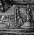

Steven: ‘Well, what does this do?’ Doctor: ‘That is the dematerialising control. And that over yonder is the horizontal hold. Up there is the scanner, these are the doors, that is a chair with a panda on it. Sheer poetry, dear boy. Now please stop bothering me.’
— Dennis Spooner, The Time Meddler (a Doctor Who serial, 1965)

A switchable object is one which can be switched off or
on, usually because it has some obvious button, lever or switch on it.
The object has the attribute on if it's on, and doesn't
have it if it's off. (So there's no attribute called off,
just as there's no attribute called closed.)
The actions SwitchOn and SwitchOff allow
the player to manipulate anything which is switchable.
For example:
Object searchlight "Gotham City searchlight" skyscraper
with name 'search' 'light' 'searchlight' 'template',
article "the",
description "It has some kind of template on it.",
when_on "The old city searchlight shines out a bat against
the feather-clouds of the darkening sky.",
when_off "The old city searchlight, neglected but still
functional, sits here."
has switchable static;
Something more portable would come in handy for the explorer of ‘Ruins’, who would hardly have embarked on his expedition without a decent lamp:
Object sodium_lamp "sodium lamp"
with name 'sodium' 'lamp' 'heavy',
describe [;
if (self has on)
"^The sodium lamp squats on the ground, burning away.";
"^The sodium lamp squats heavily on the ground.";
],
battery_power 100,
before [;
Examine: print "It is a heavy-duty archaeologist's lamp, ";
if (self hasnt on) "currently off.";
if (self.battery_power < 10) "glowing a dim yellow.";
"blazing with brilliant yellow light.";
Burn: <<SwitchOn self>>;
SwitchOn:
if (self.battery_power <= 0)
"Unfortunately, the battery seems to be dead.";
if (parent(self) hasnt supporter
&& self notin location)
"The lamp must be securely placed before being
lit.";
Take, Remove:
if (self has on)
"The bulb's too delicate and the metal handle's too
hot to lift the lamp while it's switched on.";
],
after [;
SwitchOn: give self light;
SwitchOff: give self ~light;
],
has switchable;
The ‘Ruins’ lamp will eventually be a little more complicated, with a daemon to make the battery power run down and to extinguish the lamp when it runs out; and it will be pushable from place to place, making it not quite as useless as the player will hopefully think at first.
▲
The reader may be wondering why the lamp needs to use a describe
routine to give itself a description varying with its condition: why
not simply write the following?
when_off "The sodium lamp squats heavily on the ground.", when_on "The sodium lamp squats on the ground, burning away.",
The answer is that when_on and when_off
properties, like initial, only apply until an object
has been held by the player, after which it is normally given only a
perfunctory mention in room descriptions.
“You can also see a sodium lamp here.” As the describe
property has priority over the whole business of how objects are described
in room descriptions, the above ensures that the full message always
appears even if the object has become old and familiar. For much more
on room descriptions, see §26.
•
REFERENCES
The original switchable object was the brass lamp from ‘Advent’,
which even provides verbs “on” and “off” to
switch it.
•Jayson Smith's library extension
"links.h" imitates a set of gadgets found in Andrew
Plotkin's game ‘Spider and Web’. In this scheme, “linkable”
machines only work when linked to “actuators”, which are
switches of different kinds (remote controls, attachable push-buttons
and so on).